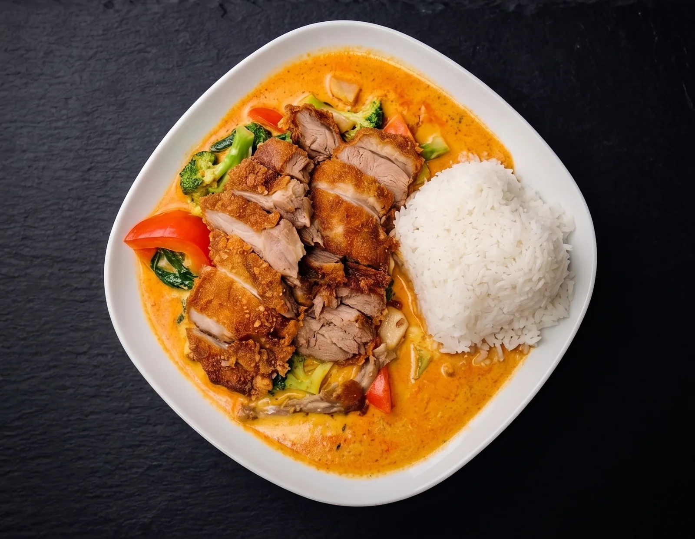

Neu eröffnet 2025
Authentische vietnamesische Speisen
Spezialitäten aus der vietnamesischen und asiatischen Küche — frisch gewokte Pho, hausgemachte Currys und knusprige Klassiker, mit der Würze, die man von guten vietnamesischen Küchen erwartet. Mitten in Langenfeld-Langfort, mit reichlich Parkplätzen vor der Tür.

Unser Restaurant
Ein gemütliches Lokal, in dem gutes Essen im Mittelpunkt steht.
Das Saigon Bistro wurde von uns liebevoll und modern eingerichtet — ruhig, gepflegt und mit ausreichend Platz, um in Ruhe zu essen und sich zu unterhalten. Direkt am Stadion und Freibad in Langenfeld gelegen.


Was unsere Gäste sagen
Stimmen unserer Gäste
Diese Einschätzungen stammen nicht von uns, sondern sind echte Google-Rezensionen unserer Gäste — wir lassen sie hier bewusst für sich sprechen.
„Ich war mit meinen Eltern im Bistro und wir hatten dreimal das Mittagsspezial. Das Essen war sehr lecker. Es wurde im Gegensatz zu den anderen asiatischen Restaurants in der Gegend auch vernünftig gewürzt. Das Gericht mit 2 von 3 Chilischoten war tatsächlich schon überdurchschnittlich scharf für Standards in Deutschland und hat eine authentische Menge Knoblauch, Ingwer und Thai-Basilikum abbekommen.“
„Das Saigon Bistro ist sehr gut gelegen. Viele Parkmöglichkeiten in der direkten Umgebung machen es perfekt für die Anreise mit dem Auto. Eine kleine Parkanlage direkt nebenan sowie das nahe städtische Schwimmbad und Stadion machen es zudem zu einem idealen Zwischenstopp während eines Ausflugs.“
„Absolutely delicious food, went to eat at Saigon Bistro with my parents and we loved it. For sure will visit again. The owners are very kind and service is top notch too, we found a new favorite place.“
„Wir waren schon mehrfach dort. Das Bistro selbst wurde von den neuen Pächtern sehr schön und gemütlich eingerichtet. Das Essen war immer super, der Service auch. Es gibt nicht nur vegetarische, sondern auch leckere vegane Varianten. Da das Essen sehr schnell zubereitet wird, können wir auch Abholung empfehlen.“
Aus unserer Küche
Was heute auf den Tisch kommt


Reservierung
Reservieren Sie Ihren Tisch
Füllen Sie das Formular aus, und wir bestätigen Ihre Reservierung per E-Mail oder Telefon. Für kurzfristige Anfragen erreichen Sie uns am schnellsten direkt per E-Mail.
Kontakt & Adresse
-
Saigon Bistro Zum Stadion 71, 40764 Langenfeld (Rheinland)
-
E-Mail Sende uns eine E-Mail
-
Telefon & Vorbestellung 02173 2034488
-
Fax 0800 202 07 702
-
Vertretungsberechtigt Thi Thanh Tran
Tisch anfragen
Alle Felder mit * sind erforderlich. Wir bestätigen jede Reservierung individuell.